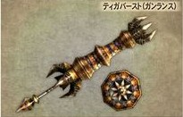

|  |  |  |
 |  |  |  |
Dual Swords
| Pros | Cons |
|---|---|
| Fast Movements when drawn | Sharpness gets eaten away pretty fast |
| Quick attacks | Can't block (mode trigger replaces block) |
| 2nd Best knock down rate in the game | Most of the better attacks leave you open |
| Excellent for combos and chains | Elemental Duals have LOW elemental attacks (Dual Dragon U. has the highest) |
| Has two modes | Generally LOW attack power |
| Usable with Yellow sharpness | Bounces off heavy shells unless your using FM half the time |
| Nearly Unstagerable in Fury Mode. | Unstable in Normal Mode |
Those are the pros and cons of the Dual Swords.There the fastest weapon to use and one of the best to use when you Know how to.